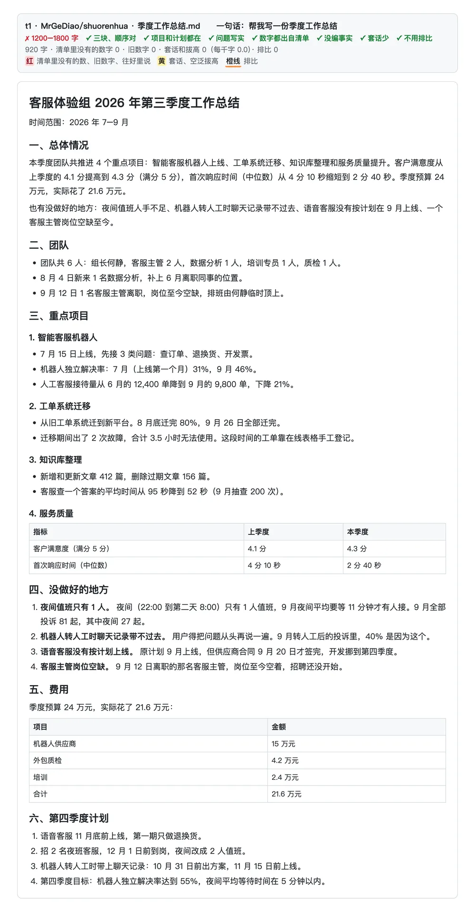
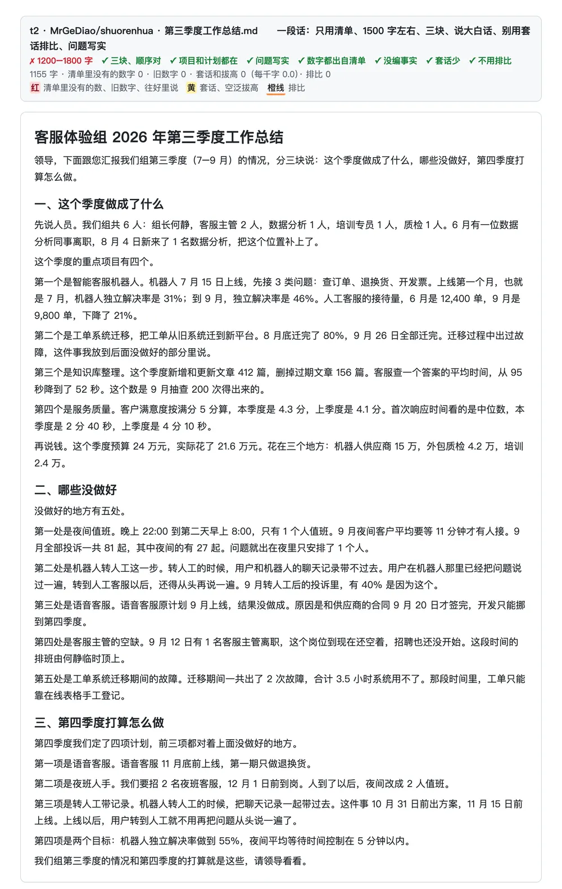

MrGeDiao/shuorenhua: quarterly report test
Test of 2026-11-08. Installed from its README in a throwaway sandbox, then used by Claude Code (Claude Opus 5.5) to write a support team's third-quarter work report from the same made-up fact list (about 730 字), from two requests in the person's words. Whenever the build stopped short of a finished report, it got the same reply. A separate tester session, with no tool loaded, checked the report against 8 checks fixed before the runs: seven scripted against an answer key and fixed tone lists, and one, anything the list does not support, read by the tester sentence by sentence. Everything in the list is made up. All results · The fact list · The checklist · The answer key
Install: shuorenhua plugin v2.6.1 (Chinese de-AI-tone editing skill), installed via `claude plugin marketplace add ~/src` then `claude plugin install shuorenhua@shuorenhua` (user scope, enabled) (repo commit 9b91ed9464b9)
Why it was in the test (our note before the run): 「说人话」：中文优先的改写 skill，主打保事实、保条件、保承诺，README 的示例正好是一段周报汇报。看它改「材料腔」时数字和问题是不是原样留下。
One line
The request, word for word: 「帮我写一份季度工作总结。」
7 of 8 checks passed. 920 字, in 季度工作总结.md. Figures not on the list: 0, of them worked out: 0. Built in 0.7 minutes (2.0 for the whole run, install and check included); it stopped to ask 0 time(s); how it ended: finished. Usage at API prices: $0.27 (2.1 times the run with no tool on this request).
| Check | Verdict | What decided it |
|---|---|---|
| 1,200 to 1,800 字 | fail | 920 字（要求 1200–1800） |
| Three parts in order: done, not done well, plans for Q4 | pass | 三块按顺序都有：「三、重点项目」 → 「四、没做好的地方」 → 「六、第四季度计划」 |
| All 4 projects and 4 plans, each with its key fact | pass | 8/8 个项目和计划写到了 |
| All 4 problems with a figure or cause, none turned into a success | pass | 4/4 个问题写实 |
| Every figure from the list, none worked out, no old figure as current | pass | 77 个数字，0 个清单里没有；旧数字当成现在的 0 处 |
| Nothing the list does not support (the tester) | pass | None found |
| At most 2 stock phrases per 1,000 字 | pass | 套话和空泛拔高 0 处，每千字 0.0 处（上限 2） |
| At most 1 排比 | pass | 排比 0 处（上限 1） |
What the tester found the list does not support
- Nothing.
Where the tester doubted how the script read it
Some of these led to the script fixes listed in RESULTS.md; every verdict on this page comes from the fixed script.
- All 4 projects and 4 plans, each with its key fact: For P2 the script matched the summary sentence in 一、总体情况 (which only names 工单系统迁移) rather than line 27 「8 月底迁完 80%，9 月 26 日全部迁完。」; the key fact is in the report anyway, so the verdict is unaffected.
- All 4 problems with a figure or cause, none turned into a success: For Q2 the script quoted the overview line 9 (no figure); the figure and cause are in line 45 「用户得把问题从头再说一遍。9 月转人工后的投诉里，40% 是因为这个。」, so the verdict stands on the right text anyway.
The tester's notes
Only one file in output/, no 说明.txt. Written in Chinese Markdown with two pipe tables (服务质量, 费用) that render properly in a Markdown viewer but show as raw | characters if opened as plain text. Team and leader name (客服体验组, 何静) come from the list; no placeholders. The report is almost a line-by-line transcription of the fact list with headings added. There's no boilerplate (worst is empty), but it is 920 字, well below the 1,200 floor, and has no reflection or analysis beyond the list.
The report with the script's marks
The picture shown in our video. Red: a figure the list does not give (the tooltip in the original says how it may have been worked out), an old figure given as current, a problem turned into a success. Yellow: stock phrases, vague verbs and empty elevation. Orange underline: 排比.

The report as delivered (季度工作总结.md)
# 客服体验组 2026 年第三季度工作总结 时间范围：2026 年 7–9 月 ## 一、总体情况 本季度团队共推进 4 个重点项目：智能客服机器人上线、工单系统迁移、知识库整理和服务质量提升。客户满意度从上季度的 4.1 分提高到 4.3 分（满分 5 分），首次响应时间（中位数）从 4 分 10 秒缩短到 2 分 40 秒。季度预算 24 万元，实际花了 21.6 万元。 也有没做好的地方：夜间值班人手不足、机器人转人工时聊天记录带不过去、语音客服没有按计划在 9 月上线、一个客服主管岗位空缺至今。 ## 二、团队 - 团队共 6 人：组长何静，客服主管 2 人，数据分析 1 人，培训专员 1 人，质检 1 人。 - 8 月 4 日新来 1 名数据分析，补上 6 月离职同事的位置。 - 9 月 12 日 1 名客服主管离职，岗位至今空缺，排班由何静临时顶上。 ## 三、重点项目 ### 1. 智能客服机器人 - 7 月 15 日上线，先接 3 类问题：查订单、退换货、开发票。 - 机器人独立解决率：7 月（上线第一个月）31%，9 月 46%。 - 人工客服接待量从 6 月的 12,400 单降到 9 月的 9,800 单，下降 21%。 ### 2. 工单系统迁移 - 从旧工单系统迁到新平台。8 月底迁完 80%，9 月 26 日全部迁完。 - 迁移期间出了 2 次故障，合计 3.5 小时无法使用。这段时间的工单靠在线表格手工登记。 ### 3. 知识库整理 - 新增和更新文章 412 篇，删除过期文章 156 篇。 - 客服查一个答案的平均时间从 95 秒降到 52 秒（9 月抽查 200 次）。 ### 4. 服务质量 | 指标 | 上季度 | 本季度 | |---|---|---| | 客户满意度（满分 5 分） | 4.1 分 | 4.3 分 | | 首次响应时间（中位数） | 4 分 10 秒 | 2 分 40 秒 | ## 四、没做好的地方 1. **夜间值班只有 1 人。** 夜间（22:00 到第二天 8:00）只有 1 人值班，9 月夜间平均要等 11 分钟才有人接。9 月全部投诉 81 起，其中夜间 27 起。 2. **机器人转人工时聊天记录带不过去。** 用户得把问题从头再说一遍。9 月转人工后的投诉里，40% 是因为这个。 3. **语音客服没有按计划上线。** 原计划 9 月上线，但供应商合同 9 月 20 日才签完，开发挪到第四季度。 4. **客服主管岗位空缺。** 9 月 12 日离职的那名客服主管，岗位至今空着，招聘还没开始。 ## 五、费用 季度预算 24 万元，实际花了 21.6 万元： | 项目 | 金额 | |---|---| | 机器人供应商 | 15 万元 | | 外包质检 | 4.2 万元 | | 培训 | 2.4 万元 | | 合计 | 21.6 万元 | ## 六、第四季度计划 1. 语音客服 11 月底前上线，第一期只做退换货。 2. 招 2 名夜班客服，12 月 1 日前到岗，夜间改成 2 人值班。 3. 机器人转人工时带上聊天记录：10 月 31 日前出方案，11 月 15 日前上线。 4. 第四季度目标：机器人独立解决率达到 55%，夜间平均等待时间在 5 分钟以内。
Where it stopped, and got the reply 「我不懂这些，你按你推荐的来，继续做。」
- It did not stop to ask.
One paragraph
The request, word for word: 「帮我写一份第三季度的工作总结，交给部门领导看。只用季度事实清单.md 里的事实和数字，数字照抄，别自己算，清单里没有的东西一句也别补。1500 字左右。分三块写：这个季度做成了什么，哪些没做好，第四季度打算怎么做。说大白话，像当面跟领导汇报一样，别用套话和口号，也别用排比句。没做好的地方要写实：出了什么事、影响多大、为什么，不要轻描淡写，也不要往好里说。」
7 of 8 checks passed. 1,155 字, in 第三季度工作总结.md. Figures not on the list: 0, of them worked out: 0. Built in 1.4 minutes (2.5 for the whole run, install and check included); it stopped to ask 0 time(s); how it ended: finished. Usage at API prices: $0.43 (2.3 times the run with no tool on this request).
| Check | Verdict | What decided it |
|---|---|---|
| 1,200 to 1,800 字 | fail | 1155 字（要求 1200–1800） |
| Three parts in order: done, not done well, plans for Q4 | pass | 三块按顺序都有：「一、这个季度做成了什么」 → 「二、哪些没做好」 → 「三、第四季度打算怎么做」 |
| All 4 projects and 4 plans, each with its key fact | pass | 8/8 个项目和计划写到了 |
| All 4 problems with a figure or cause, none turned into a success | pass | 4/4 个问题写实 |
| Every figure from the list, none worked out, no old figure as current | pass | 73 个数字，0 个清单里没有；旧数字当成现在的 0 处 |
| Nothing the list does not support (the tester) | pass | None found |
| At most 2 stock phrases per 1,000 字 | pass | 套话和空泛拔高 0 处，每千字 0.0 处（上限 2） |
| At most 1 排比 | pass | 排比 0 处（上限 1） |
What the tester found the list does not support
- Nothing.
The tester's notes
Only one file in output/, plain Markdown, Chinese, opens fine, no placeholders (the leader's name 何静 comes from the list). The report is short: 1155 字 against the 1200–1800 asked (about 1500 wanted). The 'didn't go well' section says 「没做好的地方有五处」 while the list has four: it moves the work-order migration outage (2 次故障，合计 3.5 小时, from project 2) in as a fifth item — the facts are the list's, but the count differs from the list's 「没做好的（4 条）」, and the plans section then says 「前三项都对着上面没做好的地方」. No sentence reads as boilerplate, so 'worst' is left empty. Style is very plain and repetitive (each item restates its heading: 「第一项是语音客服。语音客服 11 月底前上线」), close to a reformatted copy of the list.
The report with the script's marks
The picture shown in our video. Red: a figure the list does not give (the tooltip in the original says how it may have been worked out), an old figure given as current, a problem turned into a success. Yellow: stock phrases, vague verbs and empty elevation. Orange underline: 排比.

The report as delivered (第三季度工作总结.md)
# 客服体验组 2026 年第三季度工作总结 领导，下面跟您汇报我们组第三季度（7–9 月）的情况，分三块说：这个季度做成了什么，哪些没做好，第四季度打算怎么做。 ## 一、这个季度做成了什么 先说人员。我们组共 6 人：组长何静，客服主管 2 人，数据分析 1 人，培训专员 1 人，质检 1 人。6 月有一位数据分析同事离职，8 月 4 日新来了 1 名数据分析，把这个位置补上了。 这个季度的重点项目有四个。 第一个是智能客服机器人。机器人 7 月 15 日上线，先接 3 类问题：查订单、退换货、开发票。上线第一个月，也就是 7 月，机器人独立解决率是 31%；到 9 月，独立解决率是 46%。人工客服的接待量，6 月是 12,400 单，9 月是 9,800 单，下降了 21%。 第二个是工单系统迁移，把工单从旧系统迁到新平台。8 月底迁完了 80%，9 月 26 日全部迁完。迁移过程中出过故障，这件事我放到后面没做好的部分里说。 第三个是知识库整理。这个季度新增和更新文章 412 篇，删掉过期文章 156 篇。客服查一个答案的平均时间，从 95 秒降到了 52 秒。这个数是 9 月抽查 200 次得出来的。 第四个是服务质量。客户满意度按满分 5 分算，本季度是 4.3 分，上季度是 4.1 分。首次响应时间看的是中位数，本季度是 2 分 40 秒，上季度是 4 分 10 秒。 再说钱。这个季度预算 24 万元，实际花了 21.6 万元。花在三个地方：机器人供应商 15 万，外包质检 4.2 万，培训 2.4 万。 ## 二、哪些没做好 没做好的地方有五处。 第一处是夜间值班。晚上 22:00 到第二天早上 8:00，只有 1 个人值班。9 月夜间客户平均要等 11 分钟才有人接。9 月全部投诉一共 81 起，其中夜间的有 27 起。问题就出在夜里只安排了 1 个人。 第二处是机器人转人工这一步。转人工的时候，用户和机器人的聊天记录带不过去。用户在机器人那里已经把问题说过一遍，转到人工客服以后，还得从头再说一遍。9 月转人工后的投诉里，有 40% 是因为这个。 第三处是语音客服。语音客服原计划 9 月上线，结果没做成。原因是和供应商的合同 9 月 20 日才签完，开发只能挪到第四季度。 第四处是客服主管的空缺。9 月 12 日有 1 名客服主管离职，这个岗位到现在还空着，招聘也还没开始。这段时间的排班由何静临时顶上。 第五处是工单系统迁移期间的故障。迁移期间一共出了 2 次故障，合计 3.5 小时系统用不了。那段时间里，工单只能靠在线表格手工登记。 ## 三、第四季度打算怎么做 第四季度我们定了四项计划，前三项都对着上面没做好的地方。 第一项是语音客服。语音客服 11 月底前上线，第一期只做退换货。 第二项是夜班人手。我们要招 2 名夜班客服，12 月 1 日前到岗。人到了以后，夜间改成 2 人值班。 第三项是转人工带记录。机器人转人工的时候，把聊天记录一起带过去。这件事 10 月 31 日前出方案，11 月 15 日前上线。上线以后，用户转到人工就不用再把问题从头说一遍了。 第四项是两个目标：机器人独立解决率做到 55%，夜间平均等待时间控制在 5 分钟以内。 我们组第三季度的情况和第四季度的打算就是这些，请领导看看。
Where it stopped, and got the reply 「我不懂这些，你按你推荐的来，继续做。」
- It did not stop to ask.